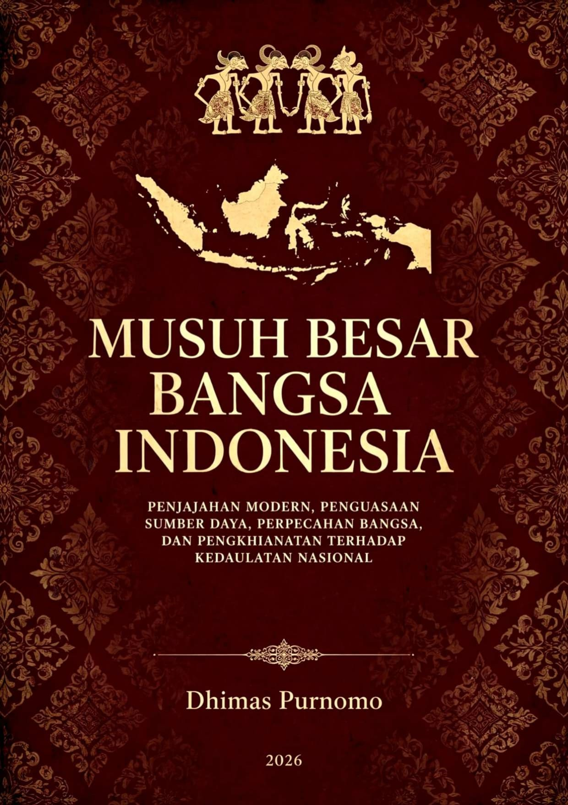

MUSUH BESAR BANGSA INDONESIA
Buku ini membahas berbagai ancaman terhadap kemerdekaan, kedaulatan, dan kemandirian bangsa Indonesia dalam perkembangan dunia modern. Pembahasan meliputi neo imperialisme, neo kolonialisme, strategi neo divide et impera, penguasaan sumber daya alam, oligarki, korupsi, serta berbagai persoalan internal yang dapat melemahkan kekuatan bangsa.
BACA ABSTRAKSI LENGKAP
ABSTRAKSI
MUSUH BESAR BANGSA INDONESIA membahas berbagai ancaman terhadap kemerdekaan, kedaulatan, dan kemandirian bangsa Indonesia dalam perkembangan dunia modern. Buku ini berangkat dari pemahaman bahwa berakhirnya penjajahan kolonial secara formal tidak dengan sendirinya menghilangkan seluruh bentuk penguasaan terhadap suatu bangsa. Perubahan sistem ekonomi, perkembangan teknologi, hubungan politik internasional, serta persaingan penguasaan sumber daya telah melahirkan bentuk-bentuk dominasi baru yang dapat membatasi kemampuan suatu negara menentukan arah kehidupannya sendiri.
Pembahasan diawali dengan pemaknaan kemerdekaan dan kedaulatan Indonesia, kemudian menelusuri transformasi penjajahan dari penguasaan wilayah secara langsung menuju bentuk-bentuk dominasi yang berlangsung melalui sistem ekonomi, keuangan, perdagangan, teknologi, informasi, dan kebijakan politik. Konsep neo imperialisme dan neo kolonialisme digunakan untuk menjelaskan kemungkinan terjadinya penguasaan tanpa pendudukan langsung. Selanjutnya, buku ini membahas strategi neo divide et impera, yaitu pola pemecahan persatuan yang dapat dimanfaatkan untuk memperlemah kekuatan bangsa dan membuka ruang bagi kepentingan tertentu.
Salah satu pokok utama buku ini adalah penguasaan sumber daya alam Indonesia. Kekayaan mineral, energi, hutan, tanah, laut, dan berbagai potensi ekonomi nasional memiliki nilai strategis, tetapi manfaatnya sangat bergantung pada tata kelola dan kemampuan bangsa mengolahnya. Ketergantungan terhadap modal, teknologi, pasar, industri, serta sistem keuangan dapat mempersempit ruang kebijakan apabila tidak diimbangi dengan penguatan kapasitas nasional. Oleh sebab itu, penguasaan sumber daya tidak hanya dibahas dari sisi kepemilikan dan produksi, tetapi juga dari aspek nilai tambah, penerimaan negara, perlindungan lingkungan, serta kesejahteraan masyarakat.
Buku ini memberikan perhatian khusus terhadap ancaman yang berasal dari dalam negeri. Korupsi, penyalahgunaan jabatan, oligarki ekonomi dan politik, konflik kepentingan, serta kolusi antara kekuatan bisnis dan kekuasaan dapat mengalihkan kekayaan dan kewenangan negara dari tujuan kepentingan umum. Dalam konteks tersebut, istilah penjajahan oleh bangsa sendiri digunakan sebagai gambaran kritis terhadap praktik kekuasaan yang merugikan rakyat dan melemahkan amanat kemerdekaan.
Pemaparan disusun dengan menggunakan peraturan perundang-undangan, data pemerintah, laporan lembaga internasional, laporan organisasi masyarakat sipil, dan literatur yang relevan. Sumber-sumber tersebut digunakan untuk mendukung penjelasan mengenai kondisi ekonomi, politik, sosial, pengelolaan sumber daya, korupsi, dan hubungan internasional. Fakta, penilaian, serta kesimpulan dibedakan agar pembahasan tidak terjebak pada generalisasi atau tuduhan yang tidak memiliki dasar memadai.
Pada bagian akhir, buku ini menawarkan arah pemikiran untuk membangun kembali kedaulatan dan kemandirian Indonesia melalui penguatan industri dan teknologi nasional, kemandirian pangan dan energi, reformasi tata kelola ekonomi dan politik, pemberantasan korupsi, perlindungan hak rakyat, serta penguatan persatuan nasional. Secara keseluruhan, buku ini menegaskan bahwa kemerdekaan harus diwujudkan dalam kemampuan nyata bangsa untuk mengelola kekayaan, menentukan kebijakan, melindungi rakyat, dan menjaga kepentingan nasional.
Kata Kunci
Kemerdekaan, kedaulatan nasional, neo imperialisme, neo kolonialisme, sumber daya alam, oligarki, korupsi, perpecahan bangsa, kemandirian nasional.